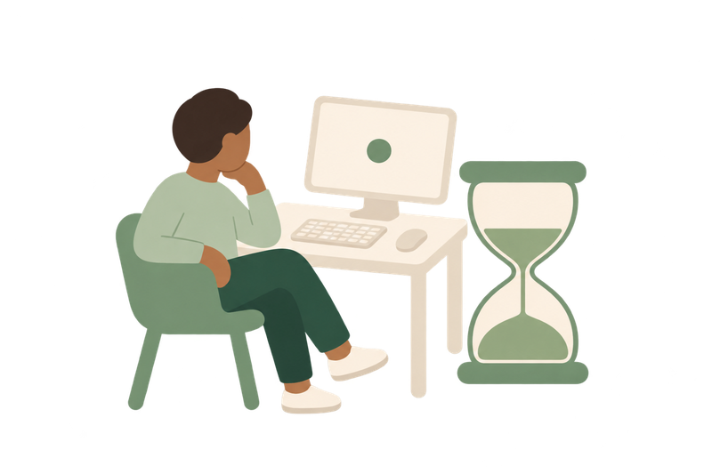
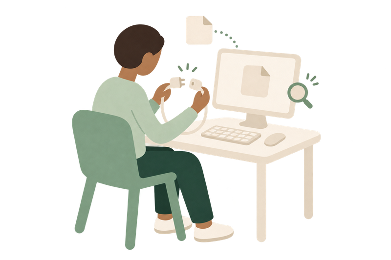

연결하는 중이에요
잠시만 기다려 주세요.

서버에 연결할 수 없어요
사용자 잘못이 아니에요. 인터넷 연결을 확인하거나 잠시 뒤 다시 시도해 주세요.
인터넷이 다시 연결되면 자동으로 다시 열어요.
다시 시도
잠시만 기다려 주세요.

사용자 잘못이 아니에요. 인터넷 연결을 확인하거나 잠시 뒤 다시 시도해 주세요.
인터넷이 다시 연결되면 자동으로 다시 열어요.
다시 시도